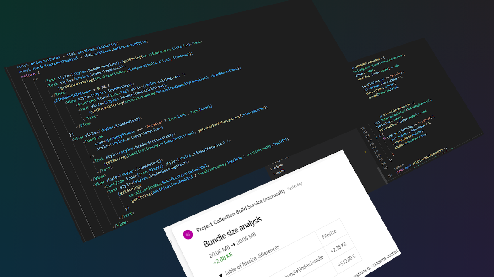
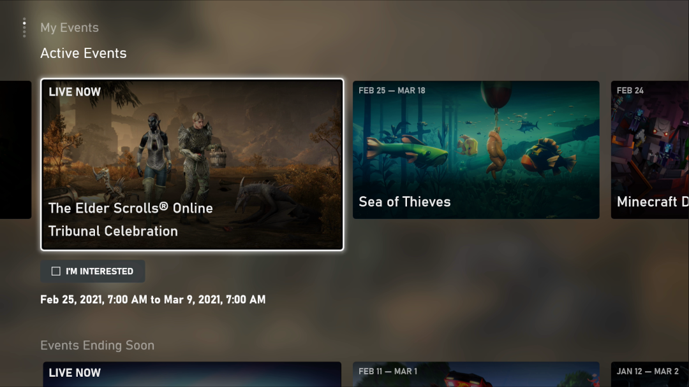
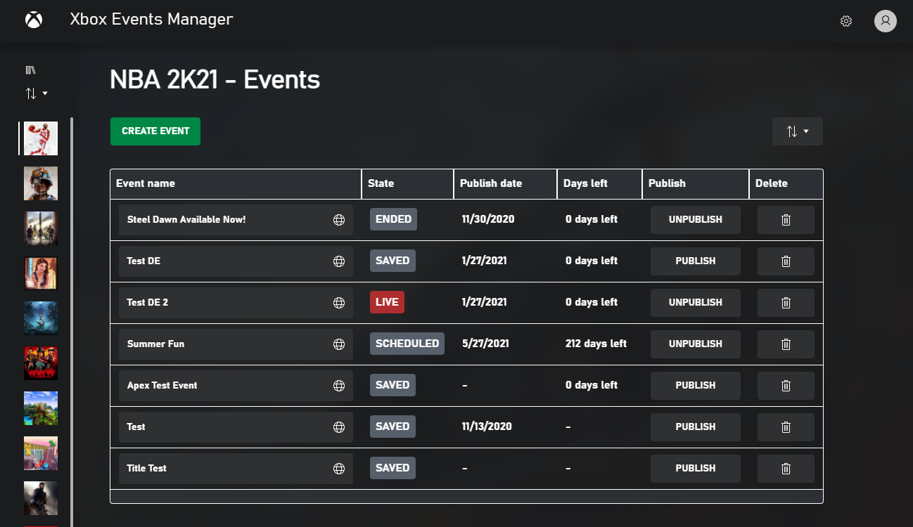
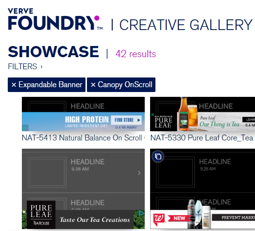

In June of 2019, just as E3 was wrapping up, my team at Xbox prototyped
an Xbox app, to prove out
React Native Windows. That app would eventually come to replace the Microsoft Store on
Xbox, releasing to the world in September of 2020. Built from the ground
up to support a fast, console-first experience, the new store is
designed to be navigated with a controller and architected with
performance as the first priority.
Blazing fast launch time
The new store launches way way faster - as much as 600% faster
than the old one, with a median cold boot launch time of 500ms.
Intuitive, beautiful console-first UI
With a 10-foot experience at top of mind, the new store is built
with a set of UI components and design principles that makes
controller navigation easy and seamless.
Industry leading developer experience
One of the first ever production apps built on
React Native Windows, building and maintaining features is painless and fast. My
driving mantra as I architected the developer experience was "make
it easy to do the right thing," and a weekly update cadence and
high user satisfaction shows that it's working.

Xbox Events
A brand new app, built on the foundational technology that built the
Microsoft Store. The app allows Xbox users to discover in-game events
and subscribe to notifications for those events starting.
Familiar, intuitive UI
Built on the same foundations as the Microsoft Store, Xbox Events
looks intentionally similar, establishing patterns for the future
of Xbox.

Robust event editor for publishers
My team treats tools as first class products. UI that only
publishers will ever see should still be beautiful, performant and
accessible. The Xbox Events Manager, a web-based publisher tool, is
a perfect example of this dedication to quality.

Verve Ads
At Verve, I built and prototyped
cutting-edge mobile ad experiences. I've been involved with every part
of the ad building process: meeting with clients, working out the
design, developing the ad itself and deciding what metrics to report on.
I haven't just built the ads, but designed and developed the core
framework that powered Verve's ad development and prototyped nearly
every new ad format Verve introduced for 3 years.
All of these ads were built in less than 2 weeks, thanks to work I led
on tools and processes that allowed Verve to offer industry-leading
turnaround times.
Coors Light NCAA Game
Interactive basketball game to promote Coors Light during March
Madness.
Netflix Black Mirror
Keeping with the creepy theme of the show, an interstitial
"holiday message" shows your current location on Google StreetView
to promote the new season of Black Mirror.
Fuze Scroll Overlay + Map
Banner overlay reacts to user scrolling (even in-app, using
Verve's proprietary SDK integration) and brings them to an
immersive map panel to find the nearest store.
Nestlé Drumstick
Match-3 game helps you figure out your favorite Drumstick flavor.
Verve Tools
The entire Foundry team at
Verve used the ad development process and build tooling that I designed
for fast design and development in a tight turnaround time. From
ideation to the finished product, every step of the process is
influenced by a tool I built.
sf2jira
-
sf2jira is an internal tool that listens for Salesforce webhooks,
then creates and assigns JIRA tickets. It was originally a
barely-functional prototype before I started at Verve, but I took
it over and rebuilt it to modern standards, with test-driven
development and functional components. It now uses an intelligent
Constraint Satisifaction Problem solver to balance developer and
designer workloads and specialties between different types of
tasks. sf2jira is a core part of the Foundry infrastructure,
building and assigning every ticket that we work on.
Hooligan
-
The next generation of creative framework for the
Foundry team.
Codenamed Hooligan because it's built on
Riot, it replaces the old and
unwieldy AdJS with a better experience for both developers and
users. At a ridiculous 86% reduction in average ad filesize, ads
render faster and take less bandwidth. Designed with reusable
components and modularity in mind, Hooligan eliminates repetitive
boilerplate, allowing Foundry developers to boast the fastest
turnaround times in the industry.
Creative Showcase
The Creative Showcase is an internal tool built to help account
managers, sales and designers find existing examples of ads that
we've built. It's entirely automated, pulling information from
JIRA, Salesforce and internal services together to enable anyone
to find whatever information they need. The frontend is built in
Vue, using IndexedDB for caching and searching through creative
data.

Personal Projects
dodo
twitter client built as a chrome extension
React
Transpiled with webpack + babel
dodo is a Twitter client built to replace the now-unmaintained
Chrome Bird extension. It is designed is to be a convenient,
always-available timeline viewer to help keep up with news on
Twitter while doing other things. It intentionally does not
implement many features of twitter.com, like viewing user profiles
or searching tweets and hashtags. The goal is to be lightweight
and simple to use.
Ludum Dare is one of the world's largest and longest running Game Jam
events. Every 4 months, we challenge creators to make a game from
scratch in a weekend.
Ludum Dare website
I've been participating in Ludum Dare competition and jam events since
December 2010, when I was only just barely getting started with game
development. Every time I compete I try to do something I've never done
before, and so LD has strongly shaped my approach to design and
development. I've learned a lot from Ludum Dare, even when my games
aren't the greatest. That said, I also have quite a few games that I'm
proud of, which I'll highlight here.
For a complete list of my LD games, visit my author pages on the Ludum
Dare sites:
SneakyLink is a chat-based game, in which you are attempting to
infiltrate a group of script kiddies, one of which is supposed to
have stolen some important document. It is built on a javascript
windowing engine and psuedo-chat framework that I built in the
48-hour competition, which unfortunately didn't leave enough time
to finish the writing. Still, it shows off the possibilities of a
game built on this fake-OS interface, which was later proven by
games like Emily is Away in
2015 and
Kingsway
in 2017.
cover is an experiment in trying to put a lot of depth into an
interface without ever opening any new windows or menus (thus
keeping the "entire game on one screen" theme). It's also an
incremental game, back from when that genre wasn't as well known
as it is now and Cookie Clicker was the go-to example. I wanted to
make a more physical sort of incremental game, where the resource
you accumulate directly impacts the space you're playing in. The
interface ended up a little confusing, but once you understand it
it's pretty fluid. This game also features the dumb jokes I like
to put in my LD games, like the "armory" that generates stick arms
for your snowmen.
WHISTLE COMMAND was my second idea for this competition, after
wasting the first half of the 48 hours on
an idea that I ended up completely scrapping. Microphone input via
getUserMedia
was only very recently available, and I had been itching to use it
in something, so I tried a simple prototype of controlling the
position of a dot with the pitch from your microphone. I found it
immediately engaging and built a little game around it with my
remaining time. I did not have very much time for the graphics,
which is... apparent.
It was the most positive feedback I've ever recieved in a Ludum
Dare, winning first place in both the Innovation and Theme
categories. It also led to a comment that I aspire to replicate
with everything I build:
Oh my god this is such a great idea. I literally could not get
past the rapid fire because I started laughing too much. I've
never seen a mechanic convey laughter that well before.
foolmoron on Ludum Dare
Ludum Dare 34 was unusual in that the two highest-voted themes
were tied, and so it was a dual-theme jam -- you could use either
or both themes in your entry. I knew immediately that I wanted to
use both, and that I wanted to make something relaxing and chill.
In the LD prior to this one (33), I started to partipate in the
Jam rather than the Competition, which meant I had an extra day
and could work with a team. This meant a marked increase in the
quality of my art assets, as I could lean on friends who are much
better at it than me! I also made use of
bbatv's wonderful song ", isn't the rain nice today?"
which adds a lot of atmosphere to the game.
With thanks, I hate it!, I wanted to create something that
surprised you with what it was willing to do. I was looking for
that moment of laughter when something unexpected happens. I also
wanted to make something aggressively unpleasant, because that was
how I read the theme - the more you play this game, the worse it
is. It's sort of an incremental game that actively punishes you
for succeeding.
On a technical note, I used this as an opportunity to try out Web
Components, which I found very helpful for this format. I used a
polyfill but otherwise focused on just HTML-standard web
components, which I think were a great choice that allowed me to
very rapidly prototype.